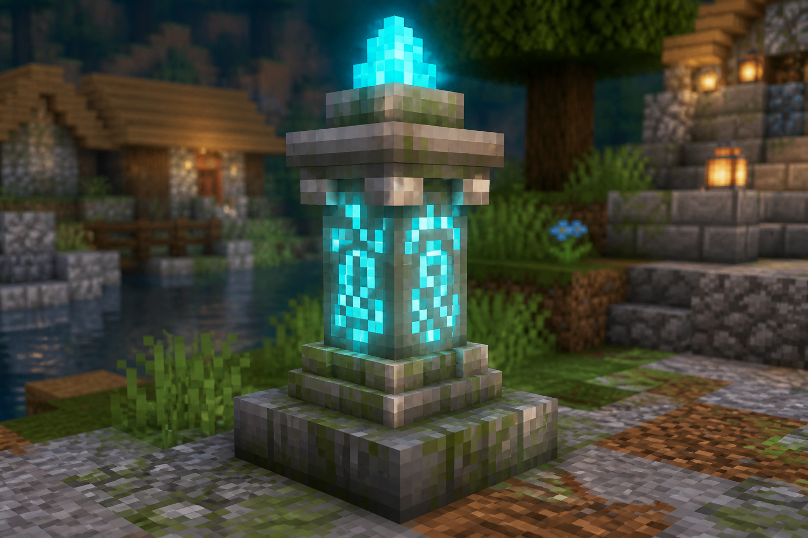

Travel
Waystones are free fast-travel on PokeHaven EU. Add a Hearthstone for a 15-minute home warp, plus gym maps, Xaero pins, and a mount.
Contents
{kind=link}

Hearthstone (home item)
Craftable stone that channels you home after 10s, then 15 min cooldown. Cobble + diamonds + ender pearl on PokeHaven — full guide: Hearthstone.
Day-one setup
- Activate the spawn waystone as soon as you load in.
- Place and activate one at your claimed base (next to bed + chests).
- After every gym (or long hike), activate a stone nearby — or place one if you brought extras.
- Rename clearly: Home, Brock, Misty, Raid dens, etc.
Free network
On this server, waystones have no teleport cost and no cooldown. Use them often.
Waystones vs pins vs gym maps
| System | What it does | Teleports? |
|---|---|---|
| Waystone | World block — you (and others who activate it) can warp there | Yes (free) |
| Hearthstone | Item linked to your home | Yes (15 min CD) |
| Xaero pin | Personal map marker | No |
| Gym map | Finished map item with coordinates for a leader | No — navigation only |
Gym-route habit
- Craft the leader’s map on the right cartography table — Gym maps.
- Pin the coordinates in Xaero if you like a trail on the minimap.
- Ride or walk out (Riding), fight, then waystone home to heal and restock.
- Leave a named waystone near the gym if you’ll return for rematches, shops, or friends.
BlueMap (browser map)
Live world overview in your browser:
Handy for orientation, bases, and sharing coordinates.
What BlueMap shows
Currently BlueMap only plots online player markers — it does not show Pokémon spawns, dens, or other mobs. Use Spawn lookup for species/biome data instead.
Other travel tools
- Hearthstone — portable home warp (15 min cooldown).
- Nature’s Compass / Explorer’s Compass — find biomes or structures when maps aren’t enough.
- Xaero’s World Map — zoom out, pin dens, mark caves, share coords in chat.
- Bed + waystone at home — quick respawn and return.
Region exploration pins
Each region's Exploration quest chapter expects consistent waystone names so BlueMap and the quest book line up for everyone. See Region exploration for the exact naming scheme per region.
Etiquette
- Don’t break or grief someone else’s waystone network.
- Public / shared stones: activate them; don’t rename stones others rely on.
- Ask before planting a stone deep inside another player’s claim.
Common mistakes
- Walking past a stone without activating it — it won’t appear in your list.
- Only pinning Xaero and wondering why you can’t teleport.
- Opening an Empty Map in the world before gym crafting — ruins that map for the cartography recipe.
See also: Hearthstone · Riding · Gym maps · Claims · First hours · Region exploration